01 • DIPLOMACY & FINANCE
G10 — G11
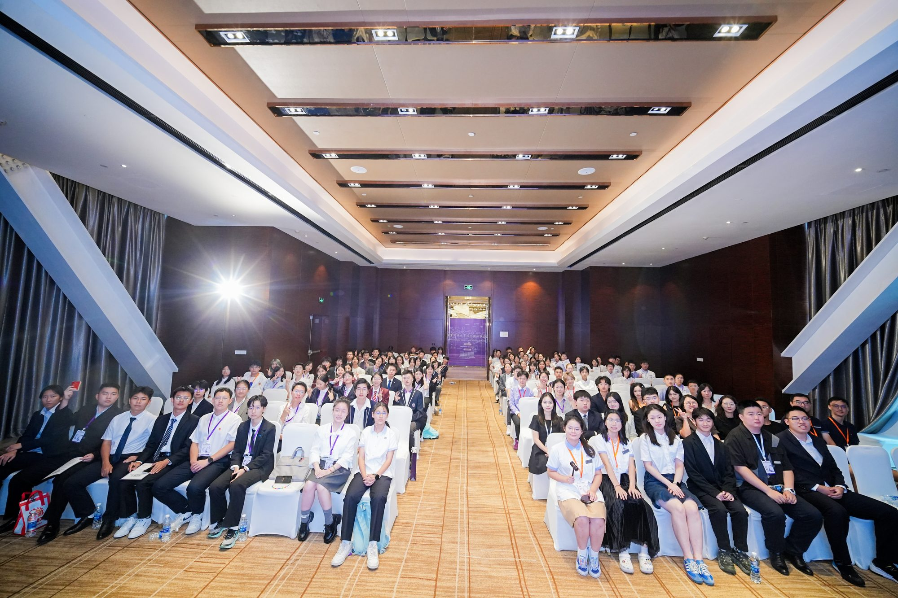
PLENARY ASSEMBLY • 300+ PARTICIPANTS
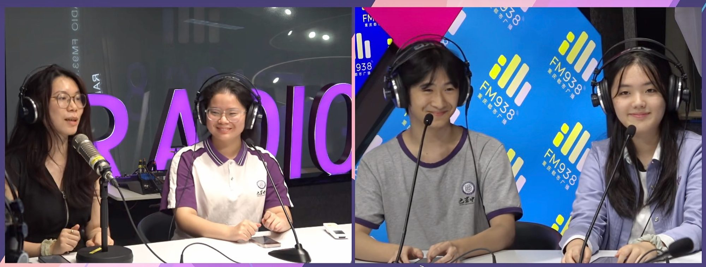
FM93.8 BROADCAST
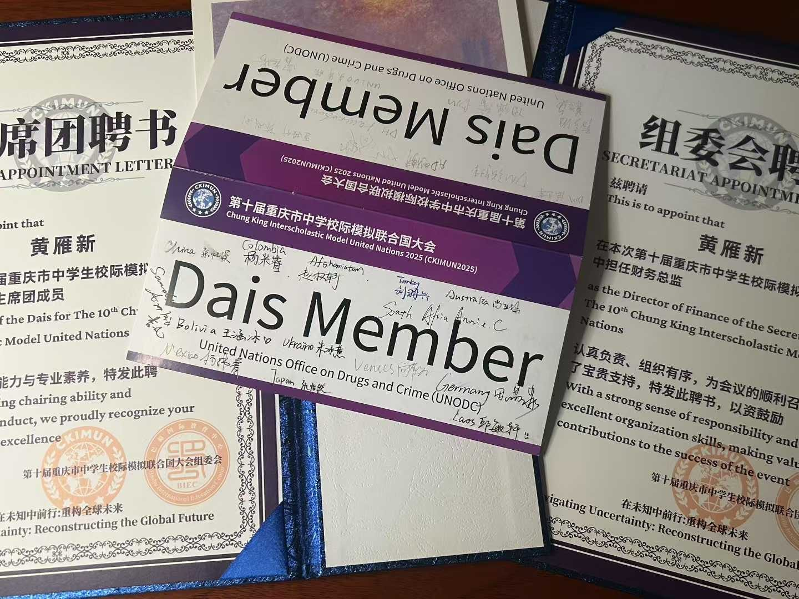
APPOINTMENT CERT
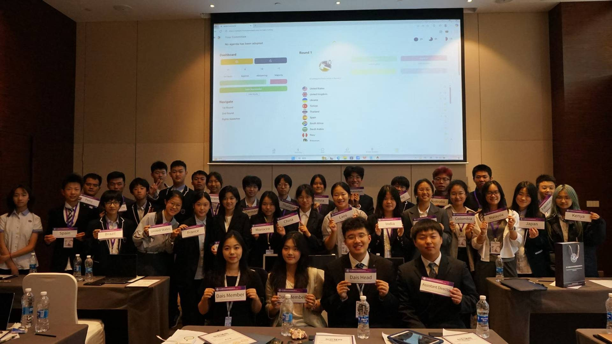
UNODC COMMITTEE • DAIS LEADERSHIP & ROSTER
Chung King Interscholastic MUN
Co-organizer & CFO (G10); Secretary-General (G11)
Chongqing’s only student-run conference welcoming 300+ delegates nationwide. Co-organized 2 major conferences, raised $1,700 in sponsorship, managed balance sheets, recruited dais staff, and coordinated 30+ conference volunteers across committees.
300+ DELEGATES
$1,700 RAISED
30+ VOLUNTEERS
02 • INSTITUTIONAL GOVERNANCE
G10 — G11
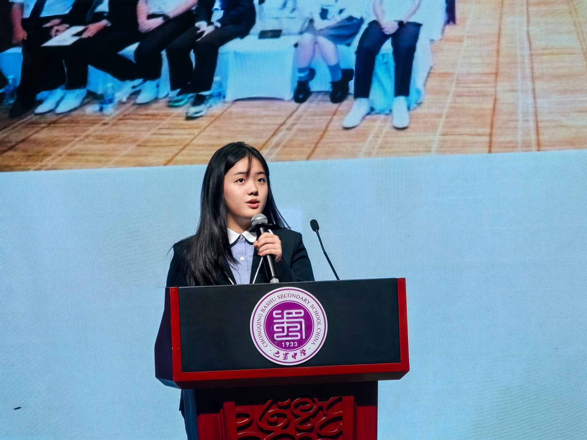
KEYNOTE ADDRESS • BASHU PODIUM
BIEC Student Council
Secretary-General & Vice Chair, Culture and Sports
Directed 16 campus initiatives spanning basketball, soccer, badminton, chess championships, and arts weeks. Raised $2.3K, boosted student attendance by 300, and expanded Student Council membership by 10%.
16 INITIATIVES
$2,300 FUNDRAISED
+300 ATTENDANCE
03 • PUBLIC BROADCASTING
WEEKLY
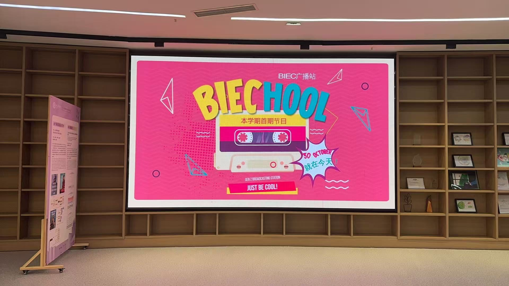
BIECHOOL • BROADCAST LAUNCH SCREEN
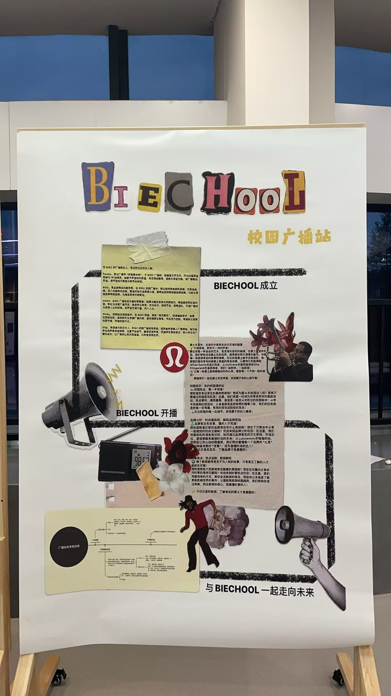
FOUNDING POSTER • COMPLETE DISPLAY
BIEC Broadcasting Station
Co-founder, Weekly Producer, Host & Scriptwriter
Produced weekly bilingual broadcasts featuring news, culture, fashion, and jazz for 300+ students. Hosted a specialized Sichuan Opera column, authoring Qingming and Dragon Boat Festival specials.
300+ STUDENTS
OPERA COLUMN
BILINGUAL ESSAYS
04 • ACADEMIC INSTRUCTION
G11
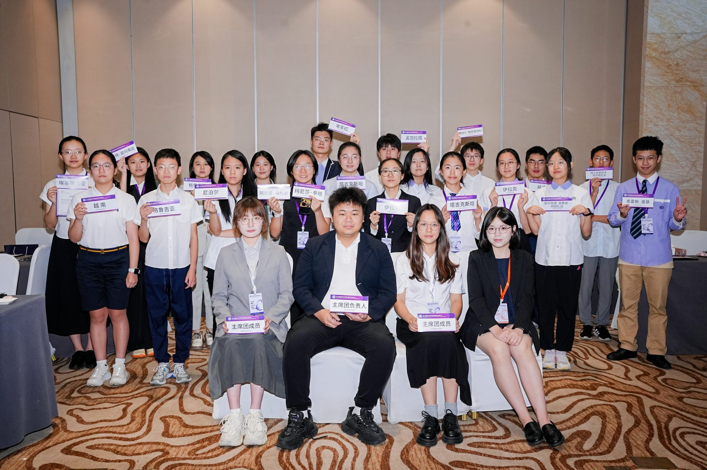
DAIS LEADERSHIP
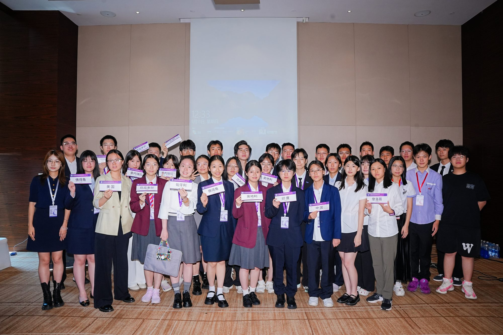
TRAINED DELEGATION
BIEC Model United Nations Club
President (G11); MUN Curriculum Designer & Trainer
Formulated a standardized MUN curriculum; coached 40+ delegates in research, position paper drafting, and parliamentary caucus debate. Spearheaded school delegations to 10+ Model UN conferences nationwide.
40+ TRAINED
10+ CONFERENCES
SYLLABUS AUTHOR
05 • INTANGIBLE HERITAGE
APPRENTICESHIP
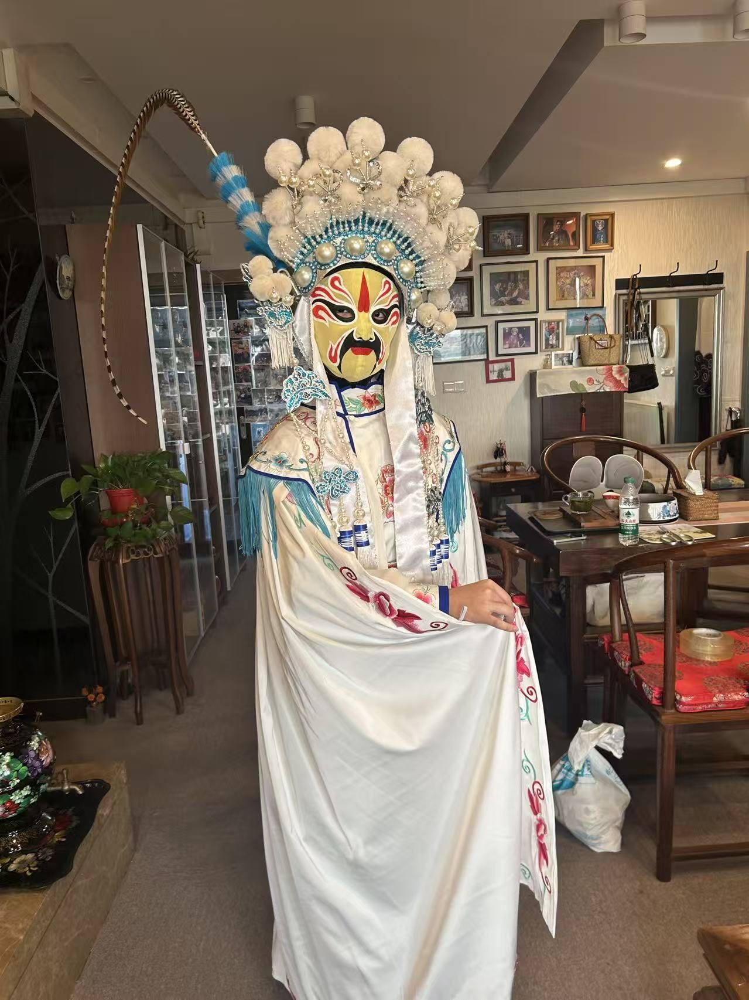
STAGE ATTIRE
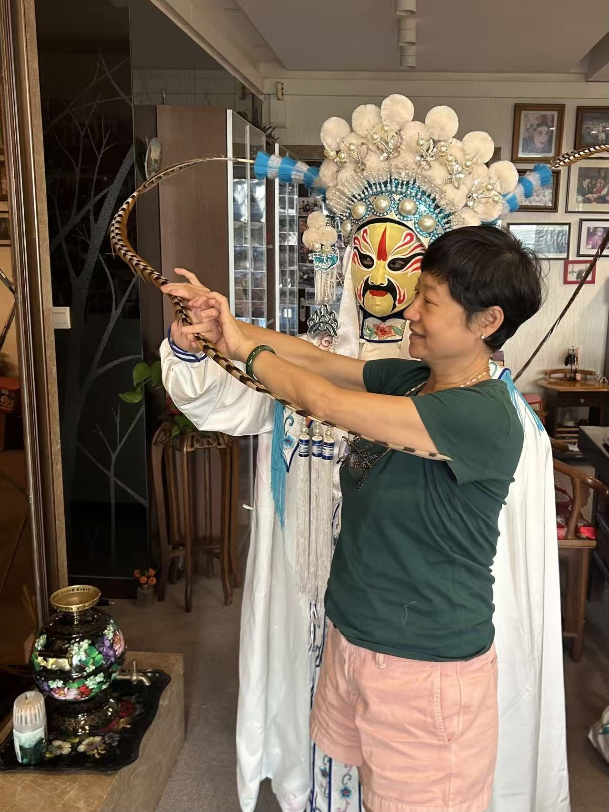
LINGZI POSTURE
HERITAGE INHERITOR MENTORSHIP (FULL PERSPECTIVE)
Face-Changing Apprenticeship & Performer
Apprentice to Intangible Cultural Heritage Inheritor
Formally apprenticed to a national intangible cultural heritage inheritor. Mastered facial pigment layering, mechanical silk headpiece switches, and stage body mechanics; performed in 8 live showcases at schools and cultural venues.
8 LIVE PERFORMANCES
DIRECT APPRENTICE
LINGZI TECHNIQUE
06 • FILM & EXHIBITION
CAS PROJECT
CURATOR BOARD
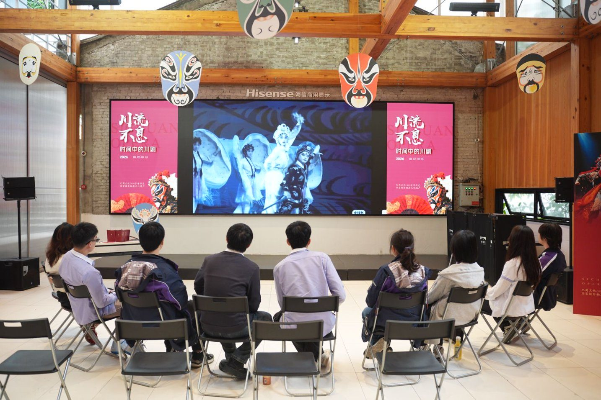
THEATER SCREENING
VIEW COMPLETE 16-PHOTO GALLERY
OPEN →
IB CAS Opera Documentary & Exhibition
Project Organizer, Documentary Maker & Performer
Produced a 13-minute documentary investigating Sichuan Opera's history and commercial dilemmas. Curated an exhibition showcase for 150+ visitors seamlessly integrating film screenings with live face-changing demonstrations.
13-MIN DOCUMENTARY
150+ ATTENDEES
CURATOR
07 • MUSEUM INTERPRETATION
AMBASSADOR
Chengdu Shadow Puppet Art Museum
Trained Bilingual Docent & Youth Ambassador
Led 40+ Chinese-English educational gallery tours for 600+ international visitors and diplomatic guests. Decoded shadow puppet craftsmanship, historical scripts, and intangible heritage policies; elected Youth Ambassador.
40+ TOURS
600+ GUESTS
YOUTH AMBASSADOR
08 • DIGITAL PUBLICATION
RESEARCH POSTS
RedNote Cultural Heritage Channel
Content Creator & Independent Account Manager
Independently managed digital archival account; published 53 in-depth research posts covering backstage face-changing practices, troupe histories, and opera preservation, bridging academic inquiry with youth culture.
53 ESSAYS
BACKSTAGE ARCHIVE